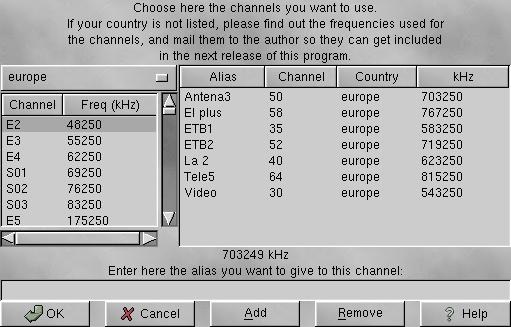

Channel editor dialog

This dialog provides a way to select the TV channels available in your
country.
You should first select the country you are in (or the one nearest to
you).
The list on the left side of the dialog should update to reflect all
the available names for frequencies in the selected country. Now you
should try to find the frequencies for the stations available in your
country.
If the list of frequencies you have chosen is the correct one then the
Search button should find automatically all
the available channels, or it should help you at least, building a
list with the found channels. If not all the channels are there, then
you must search by hand.
Channel list editing
Managing channels is somewhat difficult, but it has to be done only
once, so I didn't want to spend much time in this. Patches are welcome.
New channels: Select the country, then the real channel you
want to give an alias to. Enter in the text entry the alias an press
[Enter] or the button Add.
Removing: This one is simple. Just select from the list the
ones you want to remove and press [Del] or the button Remove.
Renaming: Once you have entered an alias, you cannot modify
it. To do something similar, select it, you will see that the country
and the real channels list are updated automatically. Now proceed to
add a new channel with the desired name and remove the old one.